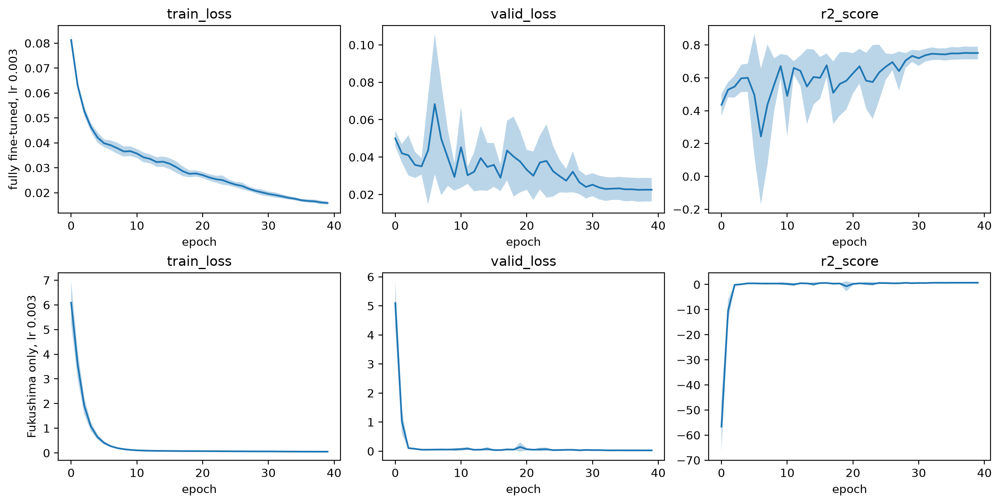
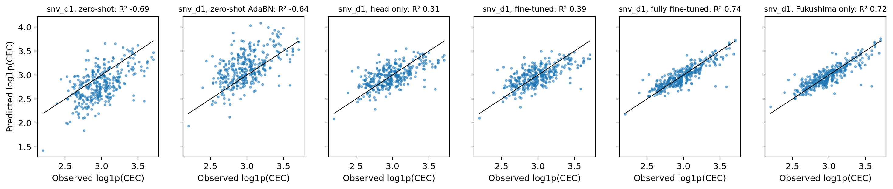

Transfer of a CNN for cation exchange capacity (CEC) from OSSL to Fukushima: zero-shot, head-only, fine-tuned, fully fine-tuned and Fukushima-only models, with schedules chosen by cross-validation
import numpy as np, pandas as pdimport matplotlib.pyplot as pltfrom fastcore.test import*from soilspecdata.allimport load_osslfrom soilspecdl.allimport plot_cvfrom ossl_fuku_transfer.data import*from ossl_fuku_transfer.transfer import*
/Users/franckalbinet/pro/dev/soilspec/ossl-fuku-transfer/.venv/lib/python3.13/site-packages/torch/jit/_script.py:1491: FutureWarning: `torch.jit.script` is deprecated. Please switch to `torch.compile` or `torch.export`.
warnings.warn(
Every code cell reads OSSL or the Fukushima data, and is marked #| fukudata. The outputs come from a local run on an Apple silicon GPU (MPS). 02_transfer defines the functions used here.
Data
OSSL MIR spectra on the shared grid, with CEC in cmolc/kg. The models predict log1p(CEC):
om = load_ossl().mir(wmin=shared_wns[0], wmax=shared_wns[-1])Xo, yo, _ = om.xy('cec_usda.a723_cmolc.kg')yo = np.log1p(yo.ravel())Xo.shape
(57062, 1675)
The Fukushima spectra, with CEC in meq/100 g, which equals cmolc/kg. The test set is the Cs137 study’s test set:
The preprocessing is SNV followed by a Savitzky-Golay first derivative, fitted on OSSL and applied to Fukushima. pretrain trains on OSSL, or loads the weights of an earlier run. The table shows the last epoch of pretraining, with the R² of the OSSL validation set:
The fully fine-tuned and Fukushima-only models each get their own learning rate and number of epochs, chosen on the Fukushima training samples by 5-fold cross-validation. The test set plays no part. start gives each model’s starting weights: the pretrained model, or None for random weights. The learning rate finder, from each starting point:
start = {'fully fine-tuned': pretrained, 'Fukushima only': None}mslug = {'fully fine-tuned': 'ft', 'Fukushima only': 'scratch'}{m: float(fuku_lr_find(s, Xf_d, yf, is_test).valley) for m, s in start.items()}
Four learning rates, each with 40 one-cycle epochs. The table gives the validation loss (mean squared error of log1p) and R² at the last epoch, as mean and standard deviation over the folds:
lrs = [1e-4, 3e-4, 1e-3, 3e-3]cv =lambda m, lr, ep: cv_curves(start[m], Xf_d, yf, is_test, lr, ep, fname=f'cv_cec_{mslug[m]}_lr{lr:g}_ep{ep}')lr_res = {(m, lr): cv_final(cv(m, lr, 40)) for m in start for lr in lrs}best_lr = {m: min(lrs, key=lambda lr: lr_res[m, lr]['valid_loss']) for m in start}pd.DataFrame(lr_res).T.round(4)
valid_loss
valid_loss sd
R²
R² sd
fully fine-tuned
0.0001
0.0271
0.0042
0.6978
0.0115
0.0003
0.0242
0.0049
0.7307
0.0213
0.0010
0.0232
0.0058
0.7436
0.0322
0.0030
0.0226
0.0063
0.7508
0.0383
Fukushima only
0.0001
0.0381
0.0071
0.5754
0.0413
0.0003
0.0325
0.0066
0.6383
0.0398
0.0010
0.0285
0.0064
0.6835
0.0388
0.0030
0.0266
0.0049
0.7044
0.0194
The learning curves at each model’s best learning rate, as mean over folds with a band of ±1 standard deviation:
fig, axs = plt.subplots(2, 3, figsize=(12, 6), layout='constrained')for row, m inzip(axs, start): plot_cv(cv(m, best_lr[m], 40), axs=row) row[0].set_ylabel(f'{m}, lr {best_lr[m]:g}')

Three numbers of epochs, at each model’s best learning rate. A one-cycle schedule changes shape with its length, so each count is trained separately:
eps = [20, 40, 80]ep_res = {(m, ep): cv_final(cv(m, best_lr[m], ep)) for m in start for ep in eps}schedules = {m: (min(eps, key=lambda ep: ep_res[m, ep]['valid_loss']), best_lr[m]) for m in start}pd.DataFrame(ep_res).T.round(4), schedules
Each Fukushima model trains with five seeds, the fully fine-tuned and Fukushima-only models with the schedules chosen above. The other models keep their defaults. The table gives the mean and standard deviation over the seeds of R² and correlation r of log1p(CEC), and of the RMSE and bias of CEC in cmolc/kg, on the test samples:
For scale, the standard deviation of the test CEC values, in cmolc/kg:
round(float(np.expm1(yt).std()), 3)
5.612
Predictions of the first seed against the observed values:
plot_preds(preds, yt, label='log1p(CEC)');

Joint training
One model trains from random weights on all OSSL spectra and the Fukushima training samples together, with the Fukushima samples repeated to make up 25% or 50% of the training set (see joint_dls). It uses the pretraining schedule, 20 one-cycle epochs at 1e-3, which was not tuned for joint training. Three seeds per share, scored on the same test set as above:
jrows = []for share in [0.25, 0.5]:for s inrange(3): p = fit_joint(Xo_d, yo, Xf_d, yf, is_test, share, s, fname=f'joint_cec_share{share}_seed{s}') jrows.append({'share': share, 'seed': s, **scores(yt, p)})pd.DataFrame(jrows).groupby('share')[['R²', 'r', 'RMSE', 'bias']].agg(['mean', 'std']).round(3)
R²
r
RMSE
bias
mean
std
mean
std
mean
std
mean
std
share
0.25
0.734
0.010
0.860
0.006
2.746
0.044
-0.325
0.081
0.50
0.720
0.014
0.852
0.009
2.819
0.087
-0.275
0.089
Checks
The OSSL validation R² covers OSSL’s whole CEC range. The pretrained model is scored again on its OSSL validation samples, first all of them, then those within the 5th to 95th percentile of Fukushima CEC:
lo, hi = np.quantile(yf, [0.05, 0.95])np.expm1([lo, hi]).round(2), {k: round(v, 3) for k, v in range_check(Xo_d, yo, pretrained, lo, hi).items()}
(array([11.2 , 30.77]),
{'n all': 5706,
'R² all': 0.966,
'r all': np.float64(0.983),
'n in range': 2677,
'R² in range': 0.66,
'r in range': np.float64(0.857)})
Error analysis
Mean absolute error of log1p(CEC) by soil type, year and measurement batch. Each model’s predictions are averaged over the seeds first: